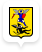
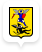
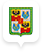
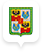
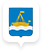
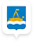

Абонентам
Регионы присутствия
 

Архангельск
ГК «Росводоканал» управляет архангельской системой водоснабжения с 2019 года. Компания заключила договор долгосрочной аренды.
arhangelsk.rosvodokanal.ru

Барнаул
ГК «Росводоканал» работает в Барнауле с 2004 года и управляет городским водоканалом по долгосрочному договору аренды (25 лет).
barnaul.rosvodokanal.ru

Воронеж
ГК «Росводоканал» работает в Воронеже с 2012 года. Тогда было заключено первое в России концессионное соглашение с властями города-миллионника.
voronezh.rosvodokanal.ru 

Краснодар
ГК «Росводоканал» управляет краснодарской системой водоснабжения с 2006 года. Компания заключила договор долгосрочной аренды.
krasnodar.rosvodokanal.ru

Омск
В Омске ГК «Росводоканал» представлена предприятием ОАО «ОмскВодоканал». Компания занимается водоснабжением и водоотведением с 2005 года.
omsk.rosvodokanal.ru

Оренбург
ГК «Росводоканал» работает в Оренбурге с 2003 года. Этот город стал первым проектом для компании.
orenburg.rosvodokanal.ru 

Тюмень
Водоснабжением Тюмени ГК «Росводоканал» занимается с 2006 года. Форма партнерства – долгосрочная аренда.
tumen.rosvodokanal.ru
Краснодар
ГК «Росводоканал» управляет краснодарской системой водоснабжения с 2006 года. Компания заключила договор долгосрочной аренды.
krasnodar.rosvodokanal.ru
Омск
В Омске ГК «Росводоканал» представлена предприятием ОАО «ОмскВодоканал». Компания занимается водоснабжением и водоотведением с 2005 года.
omsk.rosvodokanal.ru
Оренбург
ГК «Росводоканал» работает в Оренбурге с 2003 года. Этот город стал первым проектом для компании.
orenburg.rosvodokanal.ru


Росводоканал — ваш надежный партнер!
Сегодня ГК «Росводоканал» является одним из основных партнеров российских властей в деле модернизации отрасли посредствам ГЧП. Компания использует современные знания и технические решения при эксплуатации систем. Имеющиеся в арсенале передовые технологии позволяют предприятиям повысить собственную эффективность и качество воды.
Инновационные инженерные решения привлекательны для финансирования со стороны федеральных программ. Формат государственно-частного партнерства, в котором ГК «Росводоканал» осуществляет свою деятельность совместно с администрациями регионов, позволяет ему создавать самые эффективные в России водохозяйственные компании.